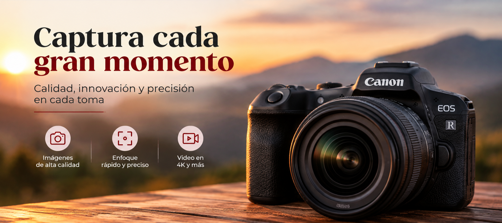
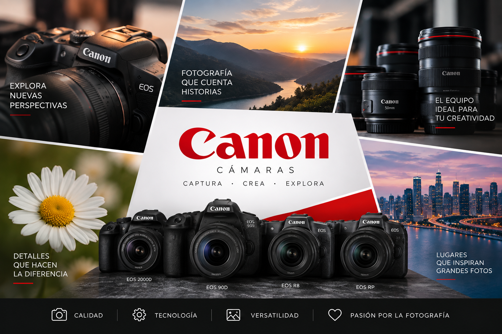

Bienvenido a El Mundo de la Fotografía
La fotografía es una forma de arte que nos permite capturar momentos, emociones y recuerdos a través de una imagen.
Este sitio está dedicado a las cámaras Canon: desde las clásicas réflex hasta las modernas cámaras mirrorless de la línea EOS. Aquí encontrarás información sobre modelos, características y recomendaciones para elegir el equipo ideal según tus necesidades.

Lo que ofrecemos
Reseñas de modelos, comparativas entre gamas, consejos de fotografía y toda la información que necesitas antes de comprar tu próxima cámara Canon.
